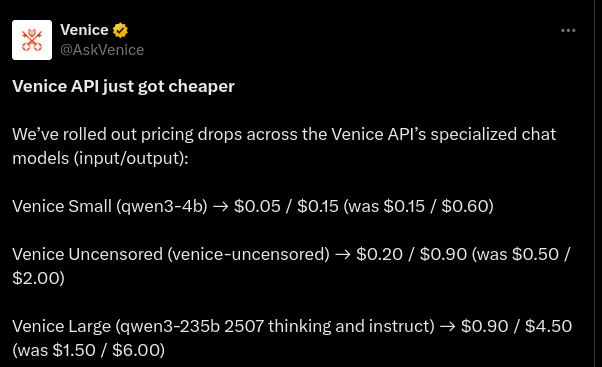
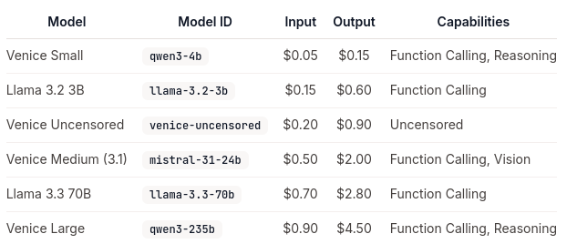

There's a audio version of this blog post, hosted on YouTube:
Why $183 is a round number for $DIEM?
The Venice API just got cheaper. They dropped the price of 3 models to as little as ⅓ of what it was before.

Every time Venice drops their prices, the DIEM token gains more utility, because with the same amount of DIEM you can get more artificial thinking done. Today, 1 DIEM can do 3x more thinking than yesterday. Said differently, DIEM gets more valuable. I love the idea that I can buy a token (DIEM) and the entire Venice team are actively working to make my token better - do more, go further.
It’s crucial that Venice keeps their API prices competitive so that builders are attracted to the venice ecosystem.

The price of 1 DIEM at the time of recording is $183. $183 doesn’t at first seem like an important number but for us it’s actually a very round number. 183 days is 6 months. One way to think about the pricing of DIEM is that If you buy DIEM today, after 6 months usage, further usage is free.
Thinking more along these lines, I had a worry about DIEM and I want to dispel it…
You know how the utility of DIEM is perpetual. Each day it’s utility is reset or recharged - you don’t use it up by using its utility. DIEM is not like a battery, it’s like a solar panel. It’s not like an apple, it’s like an apple tree. The beauty of this is that API users only need to buy it once. You get what you need and you're done. It’s not like a monthly subscription, it’s like a single-payment life-time pass. I think this is great But… It does mean there isn’t constant buy pressure from users.
Given that a token goes up in price if there’s more buyers than sellers and goes down in price if there’s more sellers than buyers.
And given that new DIEM can be minted each day from the VVV staking yield emissions.
which means there is potentially a constant sell pressure from VVV stakers.
Doesn’t this mean the fair market value of DIEM equation is bleak?
I mean, for DIEM to reach fair market value the daily emissions need to equal the ecosystem growth.,
Well I did the math…
VVV inflates at 10 million tokens per year, which is 27397 VVV tokens per day.
The current mint rate is 341.59 VVV/DIEM.
This means the maximum amount of new DIEM per day is 80.15 DIEM. If this was all sold on the market, this would be a sell pressure of about $15,000 per day, absolute maximum, at todays DIEM price of $183.
👍 This isn’t bad. This is nothing to worry about.
- ✔ Not every Venice staker mints as much DIEM as they can every day. Only a small fraction do.
- ✔ Not everyone sells the DIEM they mint. They might HODL it, or use it in DeFi such as aerodrome liquidity pools.
- ✔ But the crucial thing is that the mint rate gets more expensive as more DIEM exists according to a exponential curve. The curve creates a pseudo-maximum DIEM supply. This is by design because the Venice team need to supply the AI inference and they need to have limited liability of capacity.
The mint curve is what dispelled my worry. There isn’t constant sell pressure. The equation will balance. DIEM is not doomed.
So we’ve got happier about the sell pressure. Lets also make ourselves happier about the buy pressure…
Where does the DIEM buy pressure come from?
Firstly, If the Venice ecosystem is growing, and there’s more Apps that use the API, then more folk will need more DIEM. If we get this demand, it’s the best kind. It’s productive and these holders will be likely to have commitment even in a bear market.
Secondly, buy pressure comes from speculators and Market Makers trying to make money guessing at the value of DIEM and buying it if it seems too low. This demand maybe isn’t so good because these folks hold DIEM based on vibes more than anything else and probably won’t be around in the depth of a bear market.
Lastly, there’s potential buy pressure from potential future changes by Venice. We don’t know where they will take DIEM in the future but I think we can be sure the project isn’t finished. I.e. they have plans! This demand certainly comes with execution risk, but hopefully to the upside. For us there’s unknown unknowns here. But as an example, what if they have a new model in their App that requires DIEM to use so that the demand for DIEM isn’t just for API users, (i.e. Developers) but actual users. For example, video generation is very expensive to roll out to users, but if Venice makes a UI change such that they meter your video production capacity based on how much locked DIEM you have… Well then the demand for DIEM could sky-rocket!
I noticed on the pricing page we were looking at earlier that image generation costs $0.01. So 1 DIEM is 100 images per day. That’s interesting. I wonder if this means that IF Venice provides Video generation and video is 30 frames per second, does that mean 1 DIEM will generate about 3 seconds of video? Bullish DIEM demand!!
I’ve mentioned it before but the feature I’m DYING for them to build is a voice-to-voice mode in the Mobile App. I’d love to be able to voice chat to a Character. I know this would be rather expensive to run, but again, DIEM could unlock this.
I’m starting to think DIEM at todays price of $183 could be a bargain in hindsight.